1987
正式成立 Established
成立於高雄，開啟電信工程業務。 Established in Kaohsiung, launching telecom engineering business.
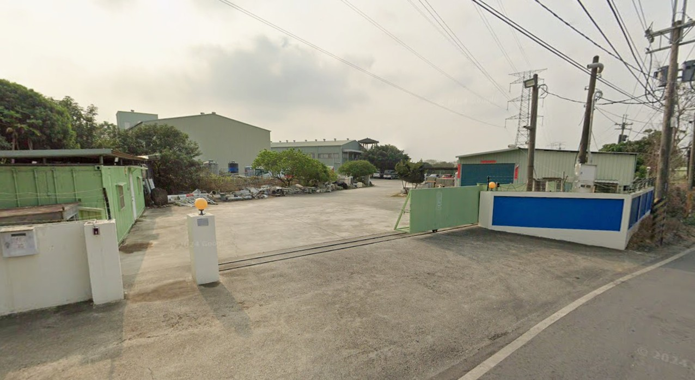
38 年通訊工程經驗，提供基地台建設、網路優化、室內涵蓋與全台維運服務 38 years of telecom engineering expertise in base station deployment, network optimization, indoor coverage, and nationwide maintenance
專業認證與安全標準 Compliance & Certifications
遵循職業安全衛生規範，結合專案管理與資通訊工程資格，提供可靠的建置與維運服務。 Combining occupational safety standards, project management, and telecom engineering qualifications for reliable delivery.
職業安全衛生管理系統認證 Occupational Health & Safety Management Certificate
專案管理與工程調度能力 Project Dispatch & Management
資通訊設備專業工程資格 Professional Telecom Equipment Qualification
以創新技術驅動連接，為您的基礎設施提供全方位的工程解決方案。 Driving connectivity with innovative technology, providing comprehensive engineering solutions for your infrastructure.
無線接取網路系統整合，從基頻到射頻單元 (DUS/RRUS) 的專業安裝與設定，確保訊號最佳化。 Radio Access Network system integration, from baseband to remote radio units (DUS/RRUS) expert installation and configuration to optimize signals.
Massive MIMO 部署與 4G/5G 雙網優化工程，最大化頻譜效益與網絡覆蓋率。 Massive MIMO deployment and 4G/5G dual-connectivity network optimization to maximize spectral efficiency and coverage.
針對大型場館與商辦大樓，提供 Ericsson Radio Dot System 規劃，消除室內訊號死角。 Ericsson Radio Dot System planning and deployment for stadiums and corporate buildings to eliminate indoor signal blind spots.
提供 OneWeb 低軌道衛星 U8 終端建置服務，為關鍵基礎設施打造高韌性的通訊備援鏈路。 Providing OneWeb LEO satellite U8 terminal deployment to build highly resilient communication backup links for critical infrastructure.
集中化無線網路建置 (C-RAN) 解決方案，大幅降低維運成本並提升資源調度彈性。 Centralized Radio Access Network (C-RAN) construction solutions, significantly lowering maintenance costs and improving resource flexibility.
從站點勘查、結構簽證到設備安裝。我們擁有全台最豐富的 Nokia 與 Ericsson 設備安裝經驗，並嚴格遵守 ISO 45001 品質規範。 From site survey, structural certification, to equipment installation. We hold extensive experience in Nokia and Ericsson equipment installation across Taiwan, adhering to ISO 45001 safety specifications.
光纖網路熔接、測試與傳輸設備整合。我們的工程團隊具備精密儀器操作能力，確保數據傳輸的高可靠性。 Fiber optic splicing, testing, and transmission equipment integration. Our engineering team operates precision instruments to ensure ultra-high data reliability.
作為 OneWeb 合作夥伴，我們提供偏遠地區與海上通訊的低軌道衛星終端建置服務。 As a OneWeb partner, we provide low Earth orbit (LEO) satellite terminal deployment services for remote areas and maritime communication.
高祥電信積極響應全球氣候行動，致力於推動淨零排放轉型。我們制定了 1.5℃ 氣候雄心計畫，透過優化工程流程與綠色能源應用，降低通訊基礎設施的碳足跡。 Gaushyang Telecom actively responds to global climate action and is committed to driving a net-zero transition. We established our 1.5°C Climate Ambition to minimize carbon footprints of telecom infrastructure through optimized engineering processes and green energy applications.
連結現在與未來的通訊橋樑。 Bridging Today and Tomorrow's Connectivity.
高祥電信工程成立於 1987 年，總部位於新北中工雲宇宙 AI 園區。我們是中華電信、遠傳電信的長期戰略合作夥伴。我們的工程足跡踏遍台灣本島、澎湖、金門、馬祖及綠島，具備極端地理環境下的施工與調度能力。 Established in 1987, Gaushyang Telecom is headquartered in the BES Cloud Universe AI Park. As a strategic partner of major carriers, our engineering footprints cover Taiwan, Penghu, Kinmen, Matsu, and Green Island, demonstrating exceptional deployment capabilities in extreme environments.
面對 5G 與 B5G (Beyond 5G) 的挑戰，我們不僅持續深化傳統電信工程技術，更積極拓展低軌道衛星與企業專網領域，致力於成為亞太地區最受信賴的通訊整合專家。 Facing the challenges of 5G and B5G (Beyond 5G), we continue to deepen traditional telecom engineering expertise while actively expanding into low Earth orbit (LEO) satellites and private enterprise networks, striving to be the most trusted connectivity integration expert in the Asia-Pacific.
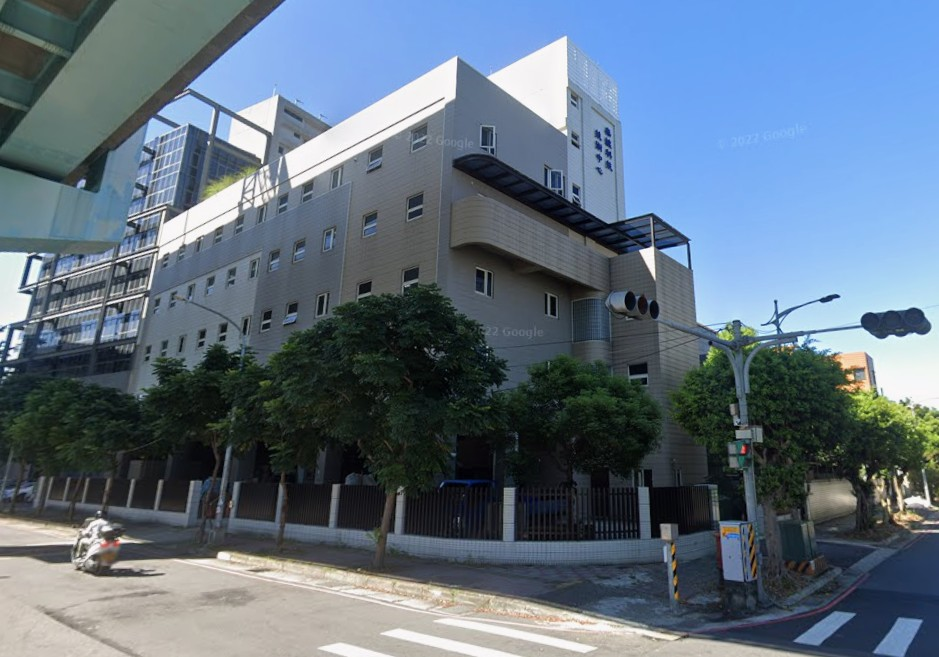
成立於高雄，開啟電信工程業務。 Established in Kaohsiung, launching telecom engineering business.

成為遠傳電信的主要合作夥伴。 Became a major strategic partner of Far EasTone Telecommunications.
承攬台灣大哥大南區傳輸網路建設工程。 Contracted for Taiwan Mobile's Southern transmission network construction project.
成為台灣愛立信的主要合作夥伴。 Became a major strategic partner of Ericsson Taiwan.
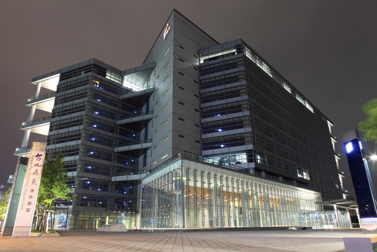
工程團隊取得多項 Ericsson ERT 與 3rd Carrier Implementation 技術認證，持續強化原廠設備建置能力。 Our engineering team earned multiple Ericsson ERT and 3rd Carrier Implementation certifications, strengthening vendor-qualified deployment capabilities.
自 2014 年起持續承攬中華電信 4G、5G 電信工程，服務範圍涵蓋北部及東部五大中心。 Since 2014, we have continuously delivered Chunghwa Telecom 4G and 5G engineering projects across five service centers in northern and eastern Taiwan.
營運擴張階段：2017 年啟用的首個新北營運基地，標誌著高祥電信服務範圍正式深耕大台北地區。 Operational Expansion: The first New Taipei operational base established in 2017, marking our deepened engagement in the Greater Taipei area.
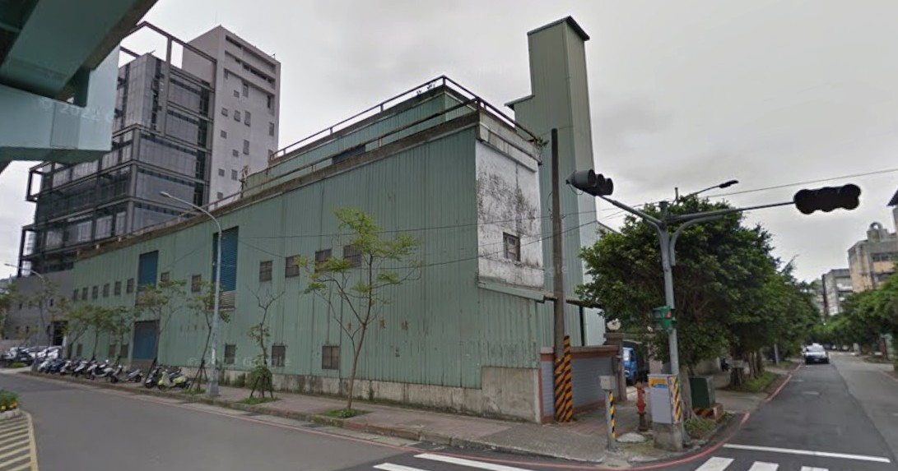
承攬台北市政府跨年活動現場通訊工程。 Contracted for telecommunications engineering projects at the Taipei City Government New Year's Eve event.
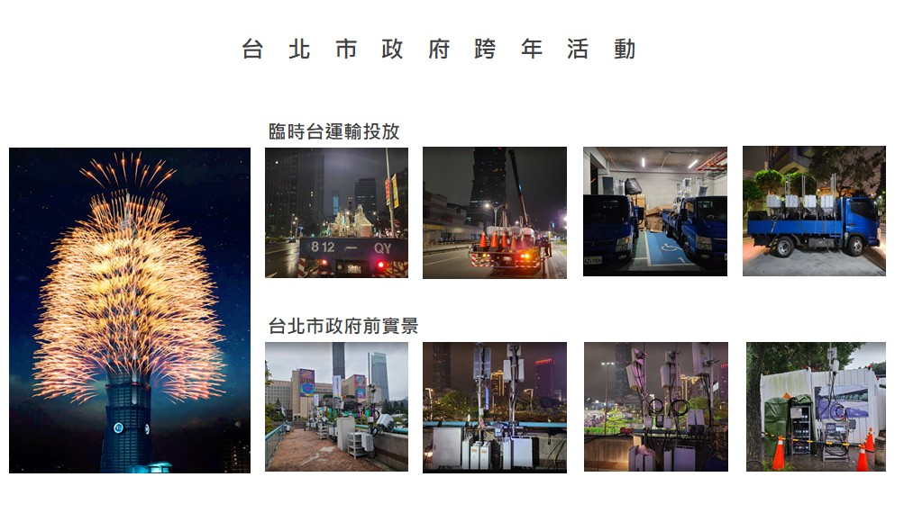
建立 C-RAN Turnkey 與自辦工程執行能力，持續累積集中式無線接取網路建置實績。 Established C-RAN turnkey and self-managed project capabilities, building a growing track record in centralized radio access network deployment.
完成首座大型場館室內覆蓋專案。 Completed the first large-scale stadium indoor coverage project.
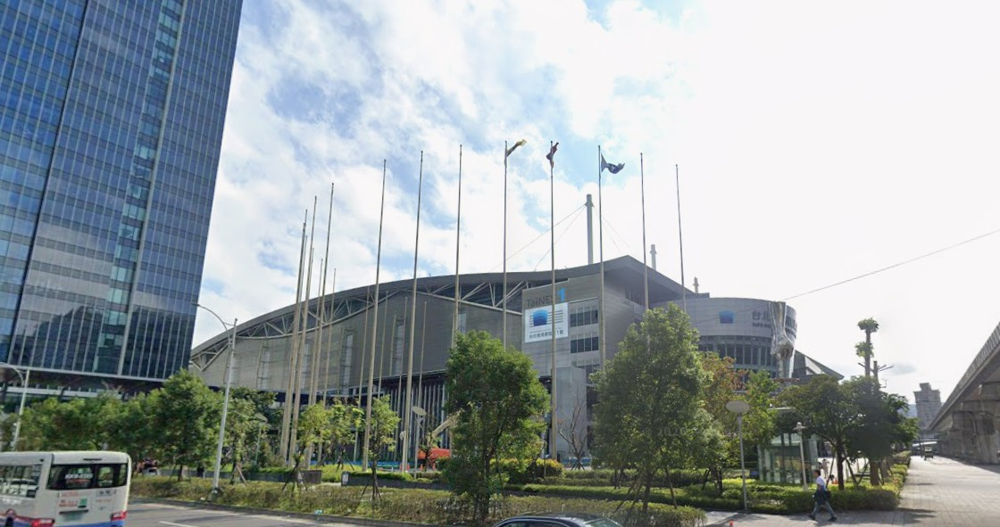
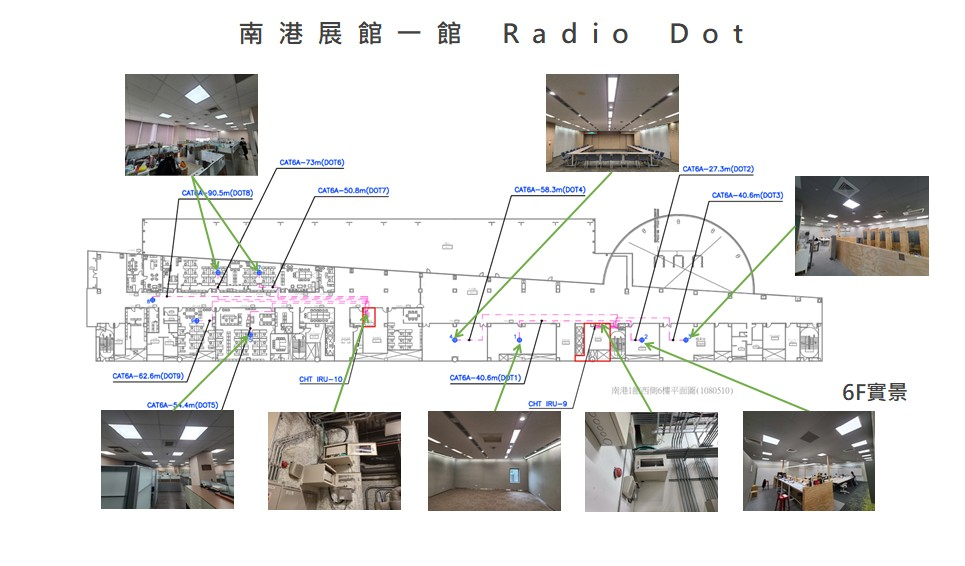
承攬遠傳電信行動通信系統信號路測作業。 Contracted for Far EasTone mobile communication system signal drive test operations.
獲頒 Ericsson Excellent OHS Performance Award，肯定工程現場的職業安全衛生表現。 Received the Ericsson Excellent OHS Performance Award in recognition of occupational health and safety performance.
整合 OneWeb 衛星通訊業務。 Integrated OneWeb LEO satellite communication services.
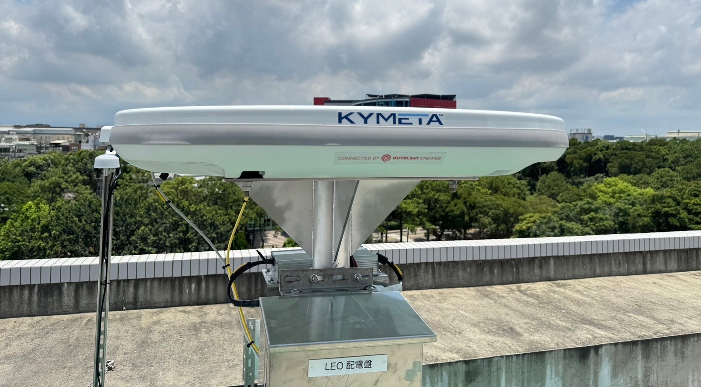
取得 NCC 電信工程業登記執照，並加入台灣區電信工程工業同業公會。 Obtained an NCC telecommunications engineering business license and joined the Taiwan Telecommunications Engineering Industry Association.
取得 ISO 45001:2018 職業安全衛生管理系統認證，適用範圍涵蓋電信基地台設備安裝及維運。 Achieved ISO 45001:2018 certification for the installation and maintenance of telecommunications station equipment.
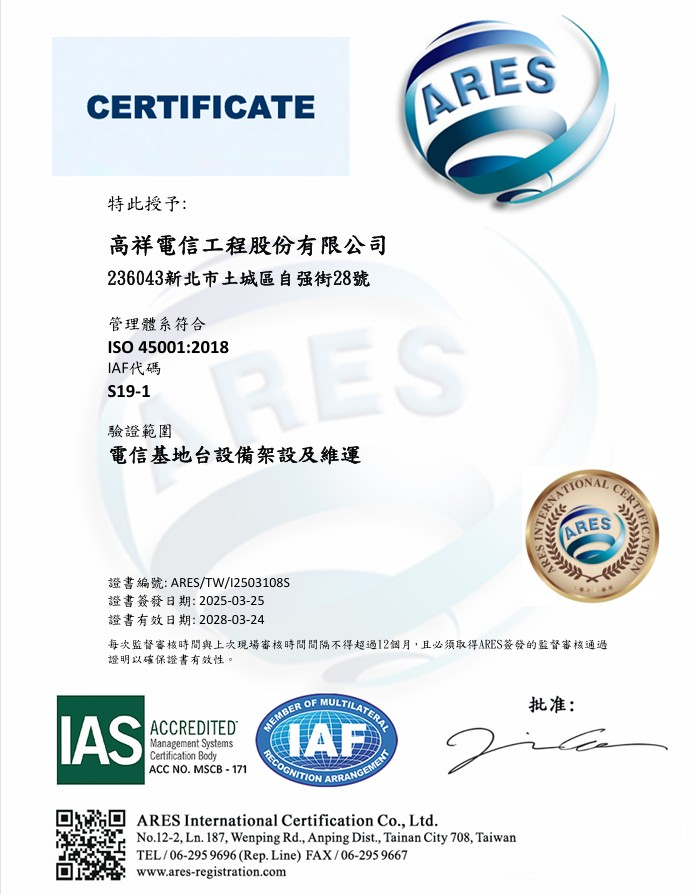
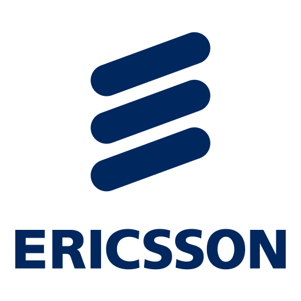
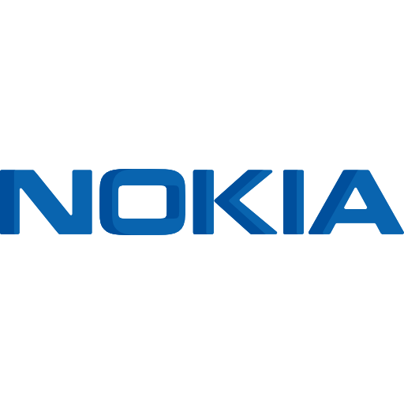
準備好升級您的網路基礎設施了嗎？ Ready to upgrade your network infrastructure?
236 新北市土城區自強街28號
No. 28, Ziqiang St., Tucheng Dist., New Taipei City 236
LET'S CONNECT
描述您的通訊工程需求，我們將協助您找到合適的解決方案。 Tell us about your telecom engineering needs, and we will help identify the right solution.